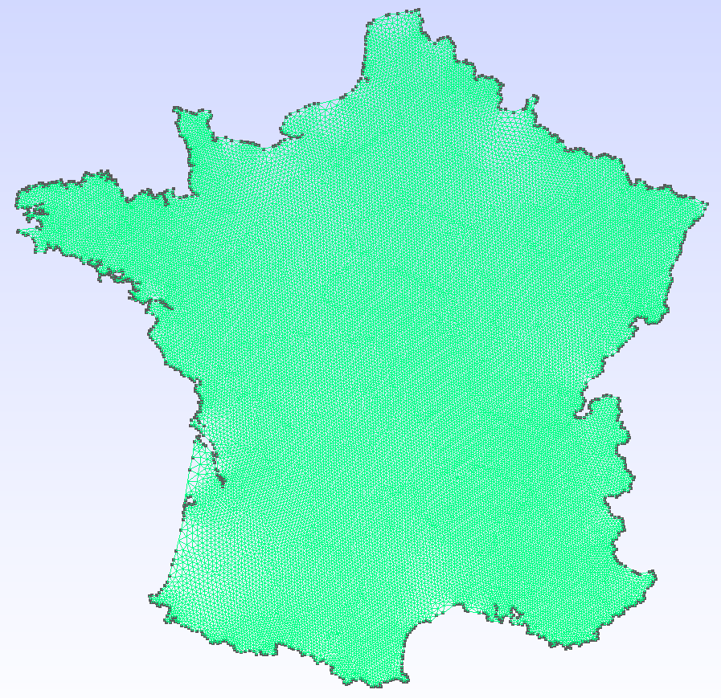
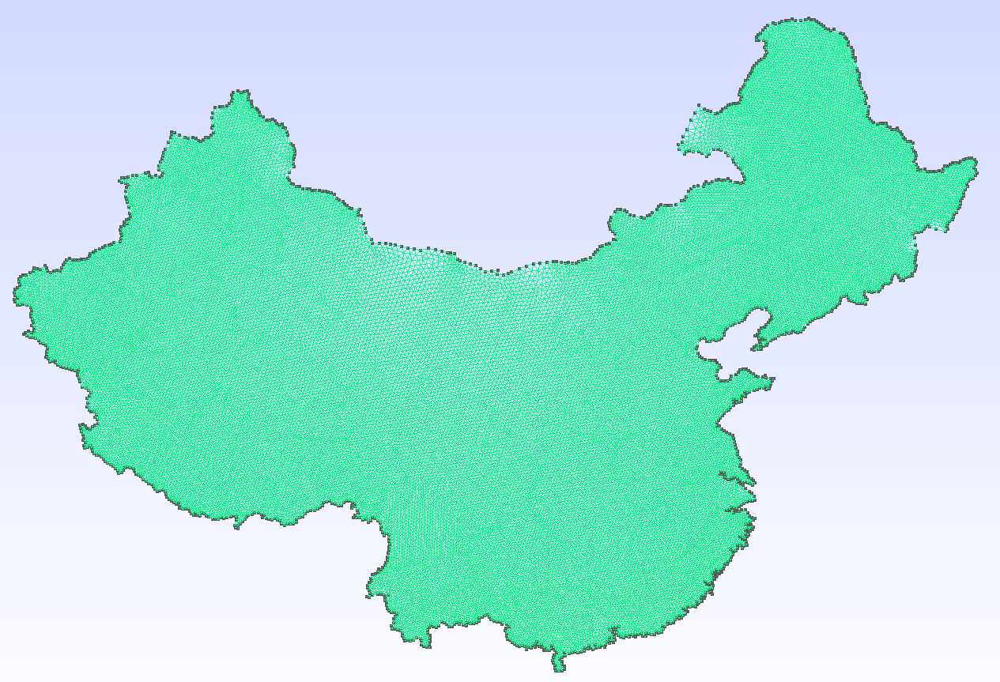

NaturalEarth — France and China (2D)
This example demonstrates using GeoGmsh with the NaturalEarth.jl package, which provides built-in access to Natural Earth country boundaries — no files to download or manage.
Features highlighted:
- Passing a
GeoJSON.FeatureCollectiondirectly (no read step needed) - Filtering by feature property (
:NAME) combined with ring index bbox_sizeto normalise coordinates into a dimensionless bounding boxMinEdgeLengthsimplification to remove short-edge redundancy
Mainland selection with
ring == 1
_expand_ringsnumbers polygon components by area, largest first.ring == 1therefore selects the mainland and excludes islands and overseas territories automatically.
| France | China |
|---|---|
 |  |
using GeoGmsh
using NaturalEarth
data_dir = joinpath(@__DIR__, "..", "data")
mkpath(data_dir)Load all country boundaries at 1:10M scale. The result is a GeoJSON.FeatureCollection that GeoGmsh accepts directly.
countries = naturalearth("admin_0_countries", 10)France
Metropolitan France only (ring == 1 excludes overseas territories such as French Guiana, Réunion and Martinique). Reprojected to Web Mercator (EPSG:3857) and simplified to ≥ 5 km edges.
println("=== France ===")
geoms_to_geo(
countries, joinpath(data_dir, "france");
select = row -> get(row, :NAME, "") == "France" && row.ring == 1,
target_crs = "EPSG:3857",
simplify_alg = MinEdgeLength(tol = 5_000.0),
bbox_size = 100.0,
verbose = true,
)
geoms_to_msh(
countries, joinpath(data_dir, "france");
select = row -> get(row, :NAME, "") == "France" && row.ring == 1,
target_crs = "EPSG:3857",
simplify_alg = MinEdgeLength(tol = 5_000.0),
bbox_size = 100.0,
mesh_size = 2.0,
verbose = true,
)China
Mainland China, simplified to ≥ 20 km edges (larger tolerance suits the coarser 1:10M source data and the larger geographic extent).
println("\n=== China ===")
geoms_to_geo(
countries, joinpath(data_dir, "china");
select = row -> get(row, :NAME, "") == "China" && row.ring == 1,
target_crs = "EPSG:3857",
simplify_alg = MinEdgeLength(tol = 20_000.0),
bbox_size = 100.0,
verbose = true,
)
geoms_to_msh(
countries, joinpath(data_dir, "china");
select = row -> get(row, :NAME, "") == "China" && row.ring == 1,
target_crs = "EPSG:3857",
simplify_alg = MinEdgeLength(tol = 20_000.0),
bbox_size = 100.0,
mesh_size = 2.0,
verbose = true,
)This page was generated using Literate.jl.